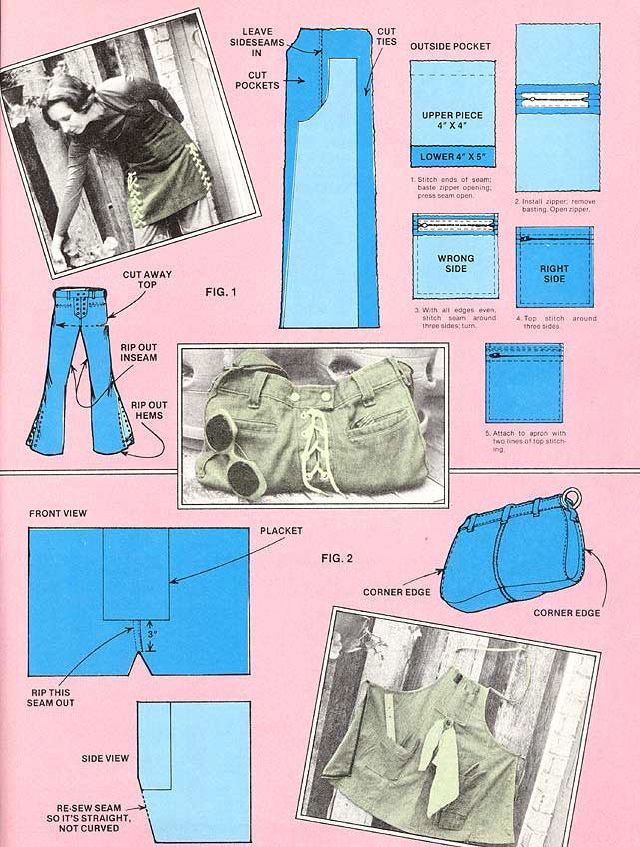

I couldn't do it. I just couldn't bring myself to throw out those laced bell-bottom jeans that were taking up space in the bottom drawer of my dresser . . . although I knew that I should. After all, they were not only out of style . . . but, recently, they had somehow gotten snug in places. (I don't want to talk any more about that.) Clearly, there was no place for them in my wardrobe.
Nevertheless, the jeans were still bright in color and rugged . . . and with those flashy grommets and white lacings, they were just too spiffy to give to the scarecrow. In the end, frugality won out over temptation and-instead of banishing the pants to the trash-I embarked on another of my "leftovers" projects. Result: My old bell-bottoms metamorphosed into a cobbler's apron and a nifty "jean-bag" (see accompanying photos).
Maybe you'd like to recycle a pair of pants or two yourself if-like me-you've gotten "too big for yer britches". It's easy! Here's how.
First cut away the top of the jeans from the legs and set the top part aside (Fig. 1). Next, rip out the hems and inseam of each leg. (Note: The inseam is often seam with a lock stitch which-if undone from the proper end-will pull out in one continuous thread.) Pin the two opened-up leg pieces together, wrong sides facing in. Leave the sideseams intact.
Now make a pattern similar to the one shown in Fig. 1 (the exact dimensions are not important). Pin this pattern to the still-pinnedtogether leg pieces and cut around it. (Cut neck and waist tie-strings-and maybe even a pocket or two, if there's enough material-from the remaining fabric, as shown in Fig. 1 and the photos.)
Pin the two new apron halves together wrong sides in, and stitch their long edges together. Afterwards, trim one flap of the seam allowance a bit, lap the other flap over it, and top-stitch. That should make the seam look like the other flatfelled seams used on most jeans.
Next, make a narrow hem down each side edge of the apron and top-stitch them. (If you prefer, you can use bias tape as I did on the workshop apron shown in one of the photos.) Make a little wider hem for the bib top and replace the bottom hem (which you ripped out earlier). Sew strips of fabric into narrow neck and waist tie-strings and attach the strings at the appropriate places. Add a few pockets if you wish . . . and there you have it: a nifty, no-cost cobbler's apron for use in kitchen, garden, or workshop.
Now for that top piece you set aside a while back . . . and what a gorgeous totebag it's going to make with all its wonderful belt loops, pockets, brass, and trim! The first order of business is to do a small revamp job on the front seam, just below the placket, where it begins to curve down and under. Rip out this short stretch (the portion that begins at the bottom of the crotch and goes up to the placket . . . about three inches), turn the whole business inside out, and restitch the seam so that it no longer wants to "curve under". (See Fig.2.)
Next-with everything still turned wrong side out-restitch the pant-top's "back" or "bottom" seam (the long one that goes up the back of the jeans) so that most of the "curve" is taken out of the back of the garment (where there was naturally a bit more fabric to accommodate your seat). Make a short-say 2"-long-T-seam across each end of this new bottom seam. Sew the leg openings shut.
Now whip the pant-top right side out again. About an inch to either side of each sideseam, top-stitch the fabric together to make a total of four "corneredges" (Fig. 2). See? Your bag's really beginning to take shape now!
If you're like me, you've probably squirreled away some wooden or metal rings somewhere (leftovers from another sewing project, perhaps). OK. Detach the tops of the jean-bag's side belt loops, place one or two rings over each loop, and sew the tops of the loops back down by hand. Now you have rings to which you can attach a shoulder strap.
Speaking of shoulder straps, I made mine from the same fabric that I eventually used for the lining of the bag shown in the photograph . . . namely, a sturdy denim-blue cotton material left over from a vest-making project. Use whatever material (denim, macrame, leather) you have handy. (If you're in a whimsical mood, you can thread a scarf, bandanna, or favorite belt through the loops!)
The lining itself is easy to install. Just cut one out about the same size and shape as the bag but approximately an inch and a half shorter from top to bottom. Then insert the lining, turn under its top edge, and overcast it to the inside of the jean-bag about threequarters of the way down the waistband on the inside of the band. An interlining (optional) will add body.
You can close the bag at the top with large snaps or-if you prefer-a salvaged heavy-duty zipper.
That's it! Now you have a good-looking allpurpose tote bag with pockets (for storing shades, keys, comb, etc.) that's lightweight, dang near indestructible, and-best of all-as inexpensive as "throwaway" fabric.
Out of another old pair of bell-bottoms, I made an apron for my guy to wear around the workshop. Although this pair of pants had no built-in pockets, I managed to salvage enough leftover fabric after cutting out the main apron halves to make two side pockets, a middle one with three sections, and a tiny extra pocket for holding tacks, nails, and soon. (As you can see from the accompanying photo, not even the jeans' short zipper was wasted.) Tie-strings came from the pants' waistband fabric, as did a small snap-open loop (below the middle pocket in the picture) to keep my guy's paint rag from wandering off just when he needs it.
So there you have three handy (and attractive) items that can be eked out of two pairs of old jeans. And to think: All they'll cost is a little of your time . . . time that you can easily steal while the soup simmers, the bread rises, and the baby naps.
|
|
 |
|